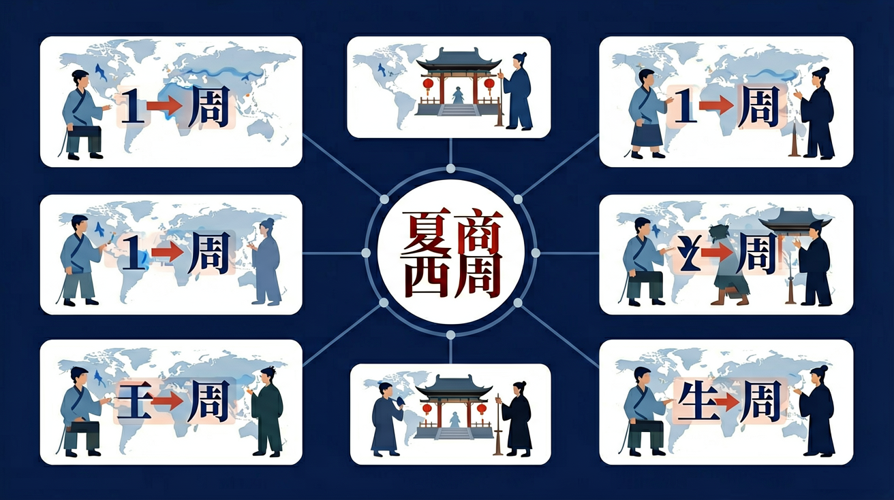

知道甲骨文是已知最早的汉字；通过了解甲骨文、青铜铭文、其他文献记载和典型器物，知道具有奴隶制特点的夏、商、西周王朝的建立与发展，了解西周分封制等重要制度。

🎯 能说出夏商西周的朝代更替顺序及关键事件
🎯 能判断青铜器、甲骨文等文物的所属朝代
🎯 能分析分封制对西周统治的影响
❓ 为什么夏朝被称为‘第一个王朝’而不是‘第一个国家’？
❓ 商朝人为什么要把文字刻在龟甲上？
❓ 西周的分封制和我们班的小组分工有啥不一样？
学完这一课，这些问题你都能自信地回答。
下列哪项是夏朝的典型特征？
殷墟出土的甲骨文主要用于？
夏商西周是初中历史的重要内容。知道甲骨文是已知最早的汉字；通过了解甲骨文、青铜铭文、其他文献记载和典型器物，知道具有奴隶制特点的夏、商、西周王朝的建立与发展，了解西周分封制等重要制度。
通过了解这一时期的生产力水平和社会关系的变化，初步理解春秋时期诸侯争霸局面的形成、战国时期商鞅变法等改革和“百家争鸣”局面的产生。
点击时代/图层按钮切换地图；悬停边界，点击城市标记查看说明。
把卡片拖到核心概念 / 方法技能 / 应用情境 / 常见误区。
拖完 4 项后自动判分。
迁移任务：找一道与「夏商西周」相关的练习题或生活情境，用本课方法完整解答一遍。
夏商周是中国早期王朝。商以青铜与甲骨文著称；西周实行分封制与宗法制，把土地、人口分给诸侯，用血缘与等级维护统治。了解这一阶段，要抓住“王权—分封—礼乐”的秩序结构。
分封解决“怎么管地方”，宗法解决“谁继承、亲疏怎么排”。答题写出目的、内容、作用。
常见误区：常见误区是把分封制等同于郡县制，或认为西周已是高度中央集权。
西周维护统治的重要政治制度是？
1. 在2023年殷墟遗址数字化项目中，考古学家使用3D建模技术复原甲骨文刻痕。通过比对不同甲骨上"贞人"（占卜官）的笔迹特征，计算机识别出至少120位贞人的书写习惯，这项技术正是基于对甲骨文"先书后刻"制作工艺的深入研究。
2. 上海博物馆的青铜器成分分析显示，商后期（殷墟时期）青铜器的铅含量突然增加至15-20%。这一发现被现代材料学家借鉴，用于研发含铅抗震合金。2019年日本新干线某型号转向架就采用了类似配比的青铜复合材料。
3. 西周"六艺"中的"数"包含历法计算，其"阴阳合历"原理至今影响农历编排。2024年河南登封观星台遗址开展的"测影定节气"活动，就是复原《周礼》记载的"土圭之法"，实测结果与现代天文计算仅相差±15分钟。
问题1：为什么说甲骨文反映的是"特殊场合的文字"而非日常书写？观察发现甲骨文单字已有4500多个，但同一时期的陶器上却多是简单符号。从商王武丁时期（前1250-前1192）一块记载狩猎的牛肩胛骨可见，其内容多关乎祭祀、战争等国之大事。思考：文字载体（坚硬甲骨 vs 易腐竹简）如何影响我们对古代书写系统的认知？现存18万片甲骨中，90%以上出自殷墟YH127窖藏，这种集中出土意味着什么？
问题2：西周宗法制宣称"立嫡以长不以贤"，但实际存在大量例外。1976年陕西出土的史墙盘铭文记载微氏家族七代世系，其中第四代却由次子继位。结合《左传》记载的"曲沃代翼"事件（前679年小宗灭大宗），分析：青铜器铭文强调"文王孙子"的意识形态，与现实中权力继承的复杂性形成什么矛盾？诸侯国在分封初期（前1046-前900年）的叛乱率高达37%，这反映制度设计存在哪些缺陷？
当我们面对殷墟出土的刻着神秘符号的牛骨，首先要理解这些甲骨文为何能成为破解夏商周文明的钥匙。目前发现的甲骨文单字中已有1600多个被释读，其中最古老的组（宾组卜辞）可追溯至武丁早期（约前1250年），它们记载着商王占问降雨、征战等事项，比如著名的"癸卯卜，争贞：旬亡祸"就体现了"王权神授"的统治逻辑。接着通过对比二里头遗址（约前1750年）的陶文符号，会发现早期文字从刻画符号到成熟体系的演进轨迹，而郑州商城出土的习刻甲骨证明文字教育已经存在。当视线转向西周，毛公鼎的499字铭文展现了金文的成熟，其中"丕显文武，皇天引厌厥德"的表述，与《尚书》记载的"以德配天"思想形成互证。最后要把握青铜器背后的制度设计，比如大盂鼎记载的"人鬲千又五十夫"反映了奴隶制经济，而宜侯夨簋的"锡土、锡民"铭文则具体化了分封制的实施细节。从甲骨占卜到青铜礼器，这些物质遗存共同勾勒出三代王朝如何通过文字、器物与制度构建华夏早期文明形态。
1. 错误表现：认为甲骨文是商朝唯一的文字形式。许多学生看到课本中强调甲骨文的重要性，误以为商朝人只用甲骨文记录。实际上，商周时期还存在青铜器铭文（金文）、简牍等书写形式，比如西周大盂鼎的291字铭文就是典型例证。这种误解源于教材对甲骨文"最早汉字"特性的突出强调，忽略了文字载体的多样性。
2. 错误表现：把夏朝400多年的历史（约前2070-前1600）与商朝550多年（约前1600-前1046）混为一谈。学生常将二里头文化三期（约前1750-前1530）直接等同于整个夏朝，实际上考古发现与文献记载存在时间差。这源于对"夏商周断代工程"研究成果的不了解，该工程通过碳14测年将夏朝始年定在公元前2070年左右。
3. 错误表现：认为西周分封制与后来郡县制类似。学生看到"分封诸侯"就联想到中央集权，实际上西周分封的71个诸侯国（如晋、鲁、卫）具有军事自治权，诸侯可在封地内再分封卿大夫。这种误解源于用后世政治制度倒推历史，忽略青铜器铭文中记载的"授民授疆土"等分封实质。
复制提示词到 AI 学伴，生成「夏商西周」的时间轴或事件提纲；也可以上传你手绘的示意图，请 AI 学伴点评。
复制后可粘贴到 AI 学伴继续对话。
以下哪项最能体现夏商西周时期青铜器的文化意义？
通过分析青铜器的图案和符号，探究其在夏商西周时期的文化和宗教意义。
先独立作答，再点选项查看对错与错因。
夏商西周时期的青铜器主要用于以下哪种活动？
以下哪项是夏商西周时期青铜器的典型特征？
青铜器在夏商西周时期的社会地位如何？
夏商西周时期的青铜器上常见的动物纹饰是____。
答案：饕餮纹
饕餮纹是夏商西周时期青铜器上常见的动物纹饰，具有宗教和象征意义。
青铜器在夏商西周时期主要用于____和____活动。
答案：祭祀、礼仪
青铜器在夏商西周时期主要用于祭祀和礼仪活动，体现了当时的社会等级和宗教信仰。
✅ 夏朝尚无可靠文字，甲骨文始于商朝
💡 将二里头遗址陶符误认为成熟文字
✅ 商朝多饕餮纹，西周新增凤鸟纹
💡 未观察典型器物差异
口诀：夏禹商汤周武王，青铜甲骨分封忙
类比：分封制像切蛋糕：周天子是持刀人，诸侯是分到的大小不等的蛋糕块
（升学题）西周分封制中，鲁国国君的初始身份最可能是？
（迁移题）若用分封制类比公司管理，周天子相当于？
下列文物组合能全面反映商朝的是？
点击节点跳转到对应章节；可切换布局。